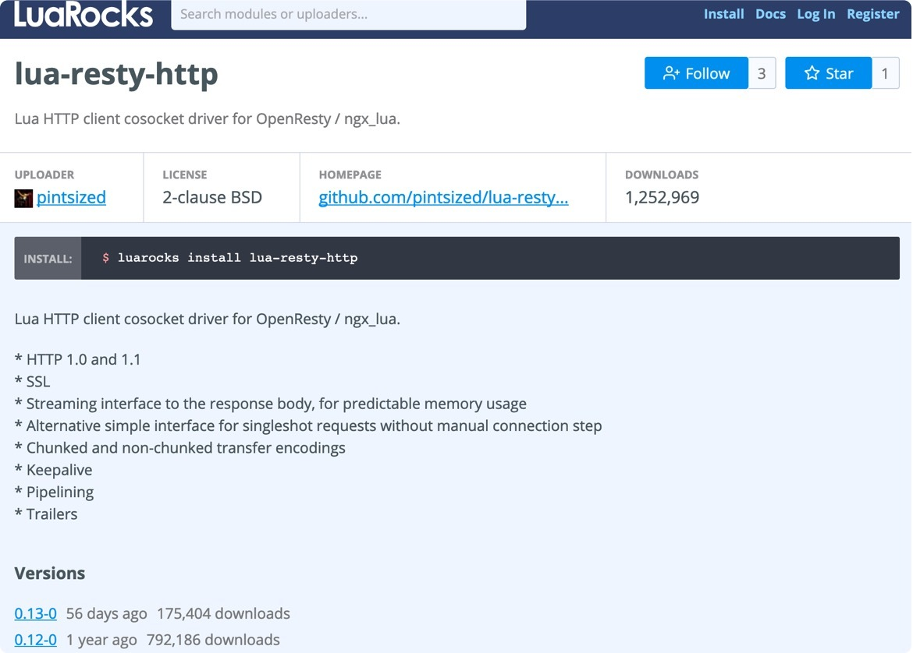

- 00 开篇词 OpenResty，为你打开高性能开发的大门.md
- 01 初探OpenResty的三大特性.md
- 02 如何写出你的“hello world”？.md
- 03 揪出隐藏在背后的那些子项目.md
- 04 如何管理第三方包？从包管理工具luarocks和opm说起.md
- 05 [视频]opm项目导读.md
- 06 OpenResty 中用到的 NGINX 知识.md
- 07 带你快速上手 Lua.md
- 08 LuaJIT分支和标准Lua有什么不同？.md
- 09 为什么 lua-resty-core 性能更高一些？.md
- 10 JIT编译器的死穴：为什么要避免使用 NYI ？.md
- 11 剖析Lua唯一的数据结构table和metatable特性.md
- 12 高手秘诀：识别Lua的独有概念和坑.md
- 13 [视频]实战：基于FFI实现的lua-resty-lrucache.md
- 14 答疑（一）：Lua 规则和 NGINX 配置文件产生冲突怎么办？.md
- 15 OpenResty 和别的开发平台有什么不同？.md
- 16 秒杀大多数开发问题的两个利器：文档和测试案例.md
- 17 为什么能成为更好的Web服务器？动态处理请求和响应是关键.md
- 18 worker间的通信法宝：最重要的数据结构之shared dict.md
- 19 OpenResty 的核心和精髓：cosocket.md
- 20 超越 Web 服务器：特权进程和定时任务.md
- 21 带你玩转时间、正则表达式等常用API.md
- 22 [视频]从一个安全漏洞说起，探寻API性能和安全的平衡.md
- 23 [视频]导读lua-resty-requests：优秀的lua-resty-_是如何编写的？.md
- 24 实战：处理四层流量，实现Memcached Server.md
- 25 答疑（二）：特权进程的权限到底是什么？.md
- 26 代码贡献者的拦路虎：test__nginx 简介.md
- 27 test__nginx 包罗万象的测试方法.md
- 28 test__nginx 还可以这样用？.md
- 29 最容易失准的性能测试？你需要压测工具界的“悍马”wrk.md
- 30 答疑（三）如何搭建测试的网络结构？.md
- 31 性能下降10倍的真凶：阻塞函数.md
- 32 让人又恨又爱的字符串操作.md
- 33 性能提升10倍的秘诀：必须用好 table.md
- 34 特别放送：OpenResty编码指南.md
- 35 [视频]实际项目中的性能优化：ingress-nginx中的几个PR解读.md
- 36 盘点OpenResty的各种调试手段.md
- 37 systemtap-toolkit和stapxx：如何用数据搞定“疑难杂症”？.md
- 38 [视频]巧用wrk和火焰图，科学定位性能瓶颈.md
- 39 高性能的关键：shared dict 缓存和 lru 缓存.md
- 40 缓存与风暴并存，谁说缓存风暴不可避免？.md
- 41 lua-resty-_ 封装，让你远离多级缓存之痛.md
- 42 如何应对突发流量：漏桶和令牌桶的概念.md
- 43 灵活实现动态限流限速，其实没有那么难.md
- 44 OpenResty 的杀手锏：动态.md
- 45 不得不提的能力外延：OpenResty常用的第三方库.md
- 46 答疑（四）：共享字典的缓存是必须的吗？.md
- 47 微服务API网关搭建三步曲（一）.md
- 48 微服务API网关搭建三步曲（二）.md
- 49 微服务API网关搭建三步曲（三）.md
- 50 答疑（五）：如何在工作中引入 OpenResty？.md
- 结束语 行百里者半九十.md
04 如何管理第三方包？从包管理工具luarocks和opm说起
你好，我是温铭。
在上一节中，我们大概了解了下 OpenResty 官方的一些项目。不过，如果我们把 OpenResty 用于生产环境，显然，OpenResty 安装包自带的这些库是远远不够的，比如没有 lua-resty 库来发起HTTP请求，也没有办法和 Kafka 交互。
那么应该怎么办呢？本节我们就来一起了解下，应该从什么渠道来找到这些第三方库。
这里，我再次强调下，OpenResty 并不是 NGINX 的 fork，也不是在 NGINX 的基础上加了一些常用库重新打包，而只是把 NGINX 当作底层的网络库来使用。
当你使用 NGINX 的时候，是不会想着如何发起自定义的HTTP请求，以及如何与 Kafka 交互的。而在 OpenResty 的世界中，由于 cosocket 的存在，开发者可以轻松地写出 lua-resty-http 和 lua-resty-kafka ，来处理这类需求，就像你用 Python、PHP 这类的开发语言一样。
另外，还有一个建议告诉你：你不应该使用任何 Lua 世界的库来解决上述问题，而是应该使用 cosocket 的 lua-resty-* 库。Lua 世界的库很可能会带来阻塞，让原本高性能的服务，直接下降几个数量级。这是 OpenResty 初学者的常见错误，而且并不容易觉察到。
那我们怎么找到这些非阻塞的 lua-resty-* 库呢？接下来，我来为你介绍下面几种途径。
OPM
OPM（OpenResty Package Manager）是 OpenResty 自带的包管理器，在你安装好 OpenResty 之后，就可以直接使用。我们可以试着去找找发送 http 请求的库 $ opm search http
第一次查询可能会比较慢，需要几秒钟的时间。opm.openresty.org 会从 PostgreSQL 数据库中做一次查询，并把结果缓存一段时间。search 具体的返回结果比较长，我们这里只看下第一条返回值：
openresty/lua-resty-upload Streaming reader and parser for HTTP file uploading based on ngx_lua cosocket
呃，看到这个结果，你可能会疑惑：这个 lua-resty-upload 包和发送 http 有什么关系呢？
原来，OPM做搜索的时候，是用后面的关键字同时搜索了包的名字和包的简介。这也是为什么上面的搜索会持续几秒，因为它在 PostgreSQL 里面做了字符串的全文搜索。
不过，不管怎么说，这个返回并不友好。让我们修改下关键字，重新搜索下：
$ opm search lua-resty-http
ledgetech/lua-resty-http Lua HTTP client cosocket driver for OpenResty/ngx_lua
pintsized/lua-resty-http Lua HTTP client cosocket driver for OpenResty/ngx_lua
agentzh/lua-resty-http Lua HTTP client cosocket driver for OpenResty/ngx_lua
其实，在 OpenResty 世界中，如果你使用 cosocket 实现了一个包，那么就要使用 lua-resty- 这个前缀，算是一个不成文的规定。
回过头来看刚刚的搜索结果，OPM 使用了贡献者的 GitHub 仓库地址作为包名，即 GitHub ID / repo name。上面返回了三个 lua-resty-http 第三方库，我们应该选择哪一个呢？
眼尖的你，可能已经发现了 agentzh 这个 ID，没错，这就是 OpenResty 作者春哥本人。在选择这个包之前，我们看下它的 star 数和最后更新时间：只有十几个 star，最后一次更新是在 2016 年。很明显，这是个被放弃的坑。更深入地看下，pintsized/lua-resty-http 和 ledgetech/lua-resty-http 其实指向了同一个仓库。所以，不管你选哪个都是一样的。
同时 OPM 的网站 也相对简单，没有提供包的下载次数，也没有这个包的依赖关系。你需要花费更多的时间，来甄别出到底使用哪些 lua-resty 库才是正确的选择，而这些本应该是维护者的事情。
LUAROCKS
LuaRocks 是 OpenResty 世界的另一个包管理器，诞生在 OPM 之前。不同于 OPM 里只包含 OpenResty 相关的包，LuaRocks 里面还包含 Lua 世界的库。举个例子，LuaRocks 里面的 LuaSQL-MySQL，就是 Lua 世界中连接 MySQL 的包，并不能用在 OpenResty 中。
还是以HTTP库为例，我们尝试用 LuaRocks 来试一试查找：
$ luarocks search http
你可以看到，也是返回了一大堆包。
我们不妨再换个关键字：
$ luarocks search lua-resty-http
这次只返回了一个包。我们可以到 LuaRocks 的网站上，去看看这个包的详细信息，下面是网站页面的截图：

这里面包含了作者、License、GitHub 地址、下载次数、功能简介、历史版本、依赖等。和 OPM 不同的是，LuaRocks 并没有直接使用 GitHub 的用户信息，而是需要开发者单独在 LuaRocks 上进行注册。
其实，开源的 API 网关项目 Kong，就是使用 LuaRocks 来进行包的管理，并且还把 LuaRocks 的作者收归麾下。我们接着就来简单看下，Kong 的包管理配置是怎么写的。
目前 Kong 的最新版本是 1.1.1， 你可以在 https://github.com/Kong/kong 的项目下找到最新的 .rockspec 后缀的文件。
package = "kong"
version = "1.1.1-0"
supported_platforms = {"linux", "macosx"}
source = {
url = "git://github.com/Kong/kong",
tag = "1.1.1"
}
description = {
summary = "Kong is a scalable and customizable API Management Layer built on top of Nginx.",
homepage = "https://konghq.com",
license = "Apache 2.0"
}
dependencies = {
"inspect == 3.1.1",
"luasec == 0.7",
"luasocket == 3.0-rc1",
"penlight == 1.5.4",
"lua-resty-http == 0.13",
"lua-resty-jit-uuid == 0.0.7",
"multipart == 0.5.5",
"version == 1.0.1",
"kong-lapis == 1.6.0.1",
"lua-cassandra == 1.3.4",
"pgmoon == 1.9.0",
"luatz == 0.3",
"http == 0.3",
"lua_system_constants == 0.1.3",
"lyaml == 6.2.3",
"lua-resty-iputils == 0.3.0",
"luaossl == 20181207",
"luasyslog == 1.0.0",
"lua_pack == 1.0.5",
"lua-resty-dns-client == 3.0.2",
"lua-resty-worker-events == 0.3.3",
"lua-resty-mediador == 0.1.2",
"lua-resty-healthcheck == 0.6.0",
"lua-resty-cookie == 0.1.0",
"lua-resty-mlcache == 2.3.0",
......
通过文件你可以看到，依赖项里面掺杂了 lua-resty 库和纯 Lua 世界的库，使用 OPM 只能部分安装这些依赖项。写好配置后，使用 luarocks 的 upload 命令把这个配置上传，用户就可以用 LuaRocks 来下载并安装 Kong 了。
另外，在 OpenResty 中，除了 Lua 代码外，我们还经常会调用 C 代码，这时候就需要编译才能使用。LuaRocks 是支持这么做的，你可以在 rockspec 文件中，指定 C 源码的路径和名称，这样LuaRocks 就会帮你本地编译。而 OPM 暂时还不支持这种特性。
不过，需要注意的是，OPM 和 LuaRocks 都不支持私有包。
AWESOME-RESTY
讲了这么多包管理的内容，其实呢，即使有了 OPM 和 LuaRocks，对于 OpenResty 的 lua-resty 包，我们还是管中窥豹的状态。到底有没有地方可以让我们一览全貌呢？
当然是有的，awesome-resty 这个项目，就维护了几乎所有 OpenResty 可用的包，并且都分门别类地整理好了。当你不确定是否存在适合的第三方包时，来这里“按图索骥”，可以说是最好的办法。
还是以HTTP库为例， 在awesome-resty 中，它自然是属于 networking 分类：
lua-resty-http by @pintsized — Lua HTTP client cosocket driver for OpenResty / ngx_lua
lua-resty-http by @liseen — Lua http client driver for the ngx_lua based on the cosocket API
lua-resty-http by @DorianGray — Lua HTTP client driver for ngx_lua based on the cosocket API
lua-resty-http-simple — Simple Lua HTTP client driver for ngx_lua
lua-resty-httpipe — Lua HTTP client cosocket driver for OpenResty / ngx_lua
lua-resty-httpclient — Nonblocking Lua HTTP Client library for aLiLua & ngx_lua
lua-httpcli-resty — Lua HTTP client module for OpenResty
lua-resty-requests — Yet Another HTTP Library for OpenResty
我们看到，这里有 8 个 lua-resty-http 的第三方库。对比一下前面的结果，我们使用 OPM 只找到 2 个，而LuaRocks 里面更是只有 1 个。不过，如果你是选择困难症，请直接使用第一个，它和 LuaRocks 中的是同一个。
而对于愿意尝试的工程师，我更推荐你用最后一个库： lua-resty-requests，它是人类更友好的 HTTP访问库，接口风格与 Python 中大名鼎鼎的 Requests 一致。如果你跟我一样是一个 Python 爱好者，一定会喜欢上 lua-resty-requests。这个库的作者是 OpenResty 社区中活跃的 tokers，因此你可以放心使用。
必须要承认，OpenResty 现有的第三方库并不完善，所以，如果你在 awesome-resty 中没有找到你需要的库，那就需要你自己来实现，比如 OpenResty 一直没有访问 Oracle 或者 SQLServer 的 lua-rsety 库。
写在最后
一个开源项目想要健康地发展壮大，不仅需要有硬核的技术、完善的文档和完整的测试，还需要带动更多的开发者和公司一起加入进来，形成一个生态。正如 Apache 基金会的名言：社区胜于代码。
还是那句话，想把 OpenResty 代码写好，一点儿也不简单。OpenResty 还没有系统的学习资料，也没有官方的代码指南，很多的优化点的确已经写在了开源项目中，但大多数开发者却是知其然而不知其所以然。这也是我这个专栏的目的所在，希望你学习完之后，可以写出更高效的 OpenResty 代码，也可以更容易地参与到 OpenResty 相关的开源项目中来。
你是如何看待 OpenResty 生态的呢？欢迎留言我们一起聊聊，也欢迎你把这篇文章转发给你的同事、朋友，一起在交流中进步。
© 2019 - 2023 Liangliang Lee. Powered by gin and hexo-theme-book.